Contents
% Image aligment % Note: rescaled images to decrease computation requirement angleRange = -60:1:60; transRange = -12:1:12; M = length(angleRange); N = length(transRange);
Part 1: Barbara image and its negative
disp('**** 1) Barbara ****'); img1 = im2double(imread('../data/barbara.png')); img2 = im2double(imread('../data/negative_barbara.png')); img2_corrupt = CreateCorruptImage(img2,28.5,-2,true(1)); figure(1) imshow(img1); title('Target Image'); figure(2) imshow(img2_corrupt); title('Corrupt Image'); JointEntropy=zeros(M,N); h = waitbar(0,'Computing joint entropy for all candidates'); for i=1:M waitbar(i/M); for j=1:N candidateImg = CreateCorruptImage(img2_corrupt,angleRange(i),transRange(j),false(1)); [~,JointEntropy(i,j)]=GetJointEntropy1(img1,candidateImg); end end close(h); figure(3); surf(transRange,angleRange,JointEntropy); title('Joint Entropy'); figure(4); imagesc(transRange,angleRange,JointEntropy); title('Joint Entropy'); [tempVal,tempIndex] = min(JointEntropy); [~,jMin]=min(tempVal); iMin = tempIndex(jMin); disp('Estimated angle - '); disp(angleRange(iMin)); disp('Estimated translation - '); disp(transRange(jMin)); alignedImage = CreateCorruptImage(img2_corrupt,angleRange(iMin),transRange(jMin),false(1)); figure(5); imshow(alignedImage); title('Aligned Image');
**** 1) Barbara ****
Estimated angle -
-28
Estimated translation -
1
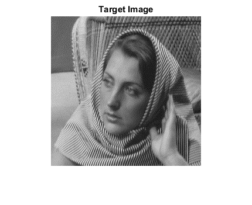 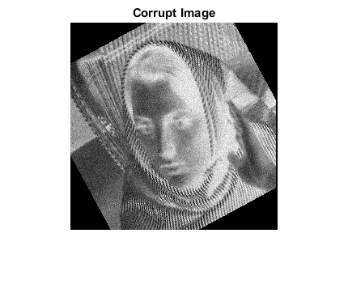 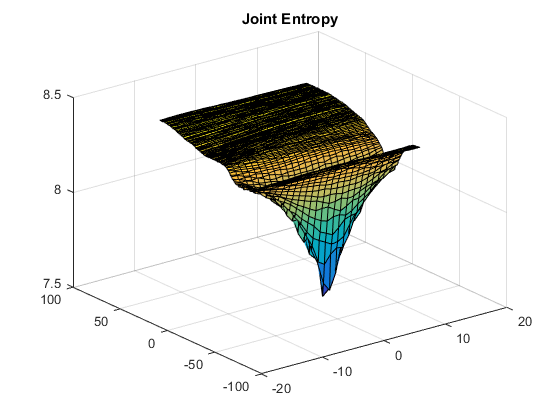 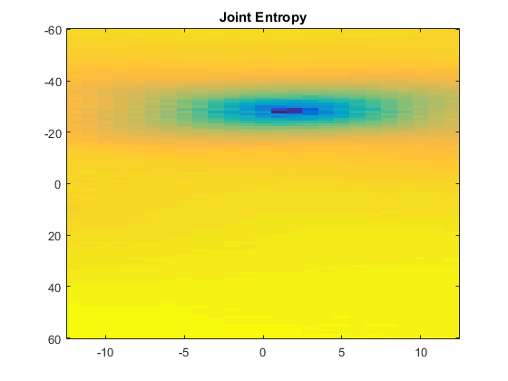 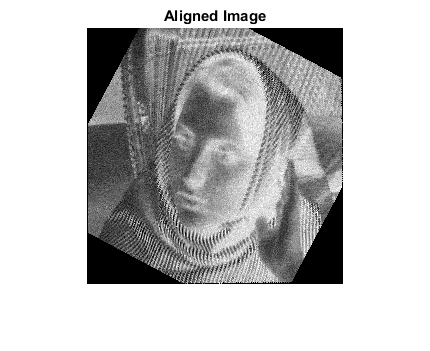 Part2: Flash and no-flash Image
disp('**** 2) Flash and no flash ****'); img1 = im2double(rgb2gray(imread('../data/flash.jpg'))); img2 = im2double(rgb2gray(imread('../data/noflash.jpg'))); img2_corrupt = CreateCorruptImage(img2,28.5,-2,true(1)); figure(6) imshow(img1); title('Target Image'); figure(7) imshow(img2_corrupt); title('Corrupt Image'); JointEntropy=zeros(M,N); h = waitbar(0,'Computing joint entropy for all candidates'); for i=1:M waitbar(i/M); for j=1:N candidateImg = CreateCorruptImage(img2_corrupt,angleRange(i),transRange(j),false(1)); [~,JointEntropy(i,j)]=GetJointEntropy1(img1,candidateImg); end end close(h); figure(8); surf(transRange,angleRange,JointEntropy); title('Joint Entropy'); figure(9); imagesc(transRange,angleRange,JointEntropy); title('Joint Entropy'); [tempVal,tempIndex] = min(JointEntropy); [~,jMin]=min(tempVal); iMin = tempIndex(jMin); disp('Estimated angle - '); disp(angleRange(iMin)); disp('Estimated translation - '); disp(transRange(jMin)); alignedImage = CreateCorruptImage(img2_corrupt,angleRange(iMin),transRange(jMin),false(1)); figure(10); imshow(alignedImage);
**** 2) Flash and no flash ****
Estimated angle -
-28
Estimated translation -
2
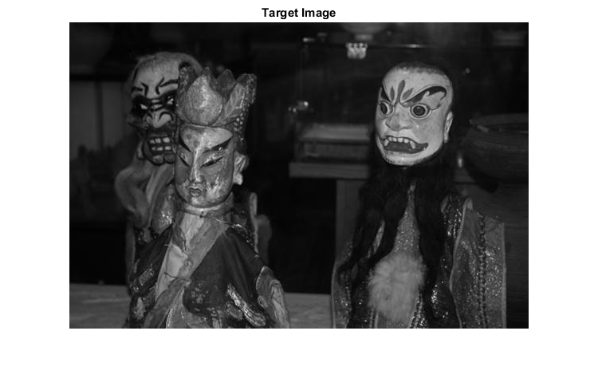 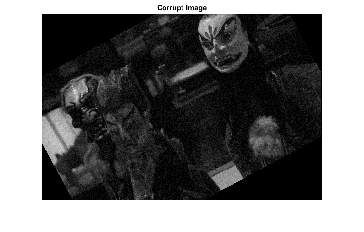 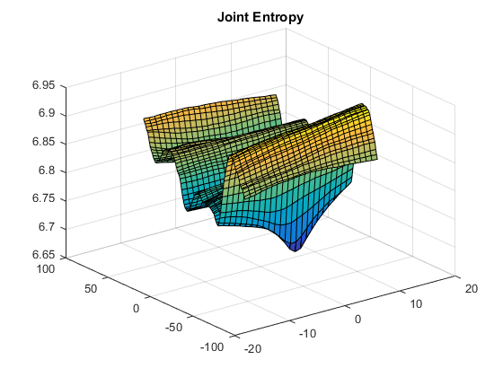 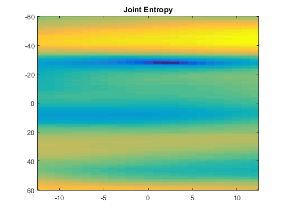 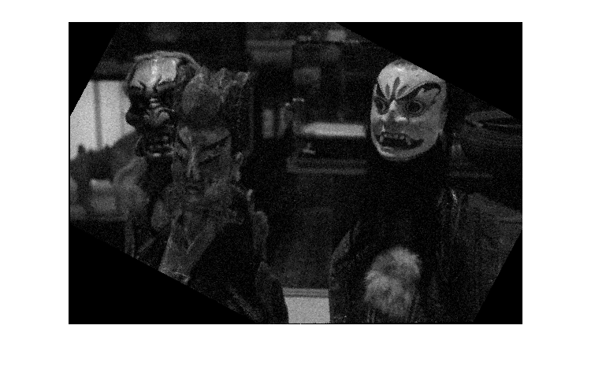 Observation 1:
The results of aligment is correct for both the case. However, the joint entropy minimization for problem 2 is non-convex, and also not so sharp minimas. This makes the problem susceptible to noise.
Part 3: Incorrect alignment for Barbara
img1 = im2double(imread('../data/barbara.png')); img2 = im2double(imread('../data/negative_barbara.png')); img2_corrupt = CreateCorruptImage(img2,28.5,-70,true(1)); angleRange = -20:1:40; transRange = -120:1:120; M = length(angleRange); N = length(transRange); JointEntropy=zeros(M,N); h = waitbar(0,'Computing joint entropy for all candidates'); for i=1:M waitbar(i/M); for j=1:N candidateImg = CreateCorruptImage(img2_corrupt,angleRange(i),transRange(j),false(1)); [~,JointEntropy(i,j)]=GetJointEntropy1(img1,candidateImg); end end close(h); figure(11) imshow(img1); title('Target Image'); figure(12) imshow(img2_corrupt); title('Corrupt Image'); figure(13); surf(transRange,angleRange,JointEntropy); title('Joint Entropy; Incorrect estmation');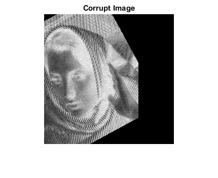 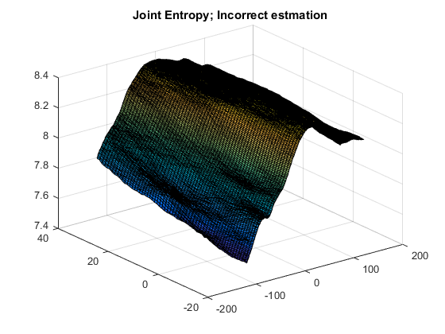